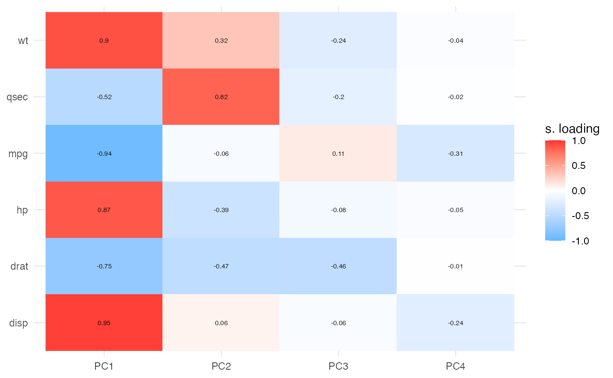
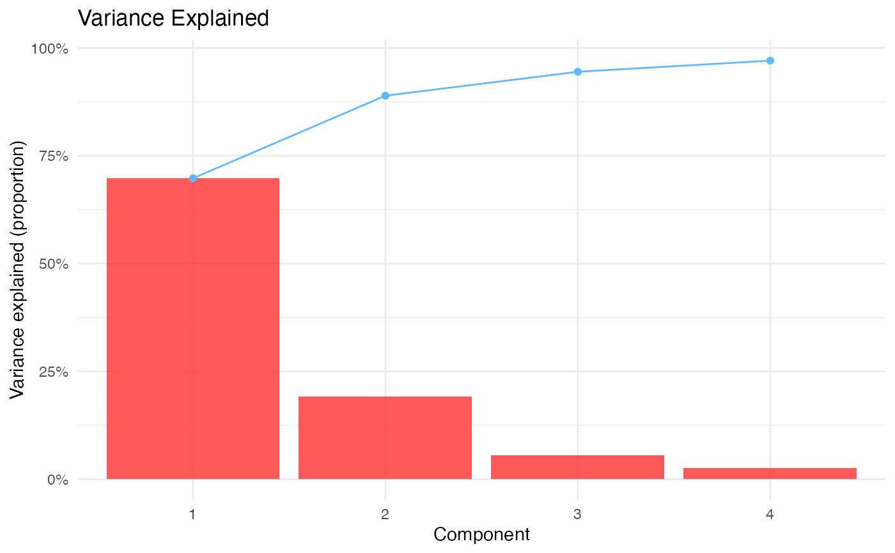
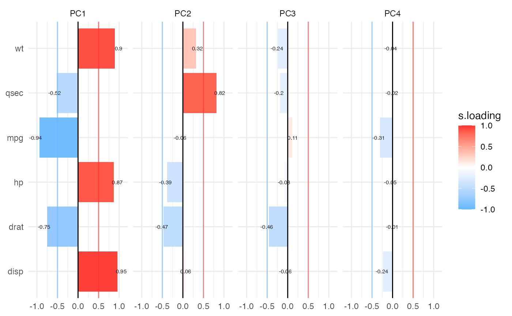

Creates heatmap and barmap visualizations of PCA loadings for easy interpretation of component structure. Heatmaps show all loadings as a color-coded matrix, while barmaps display loading patterns as bar charts across components.
Usage
pcaloadingheatmap(
data,
vars,
ncomp = 4,
cutoff = 0.5,
center = TRUE,
scale = TRUE,
textvalues = TRUE,
starvalues = FALSE,
textsize = 2,
plotlegend = TRUE,
plotcutoff = TRUE,
gradientcolor = TRUE,
colorlow = "steelblue1",
colormid = "white",
colorhigh = "firebrick1",
plotwidth = 600,
plotheight = 450
)Arguments
- data
The data as a data frame.
- vars
Continuous variables to include in Principal Component Analysis. Select at least 3 numeric variables.
- ncomp
Number of principal components to display (1 to 10).
- cutoff
Threshold for marking loadings as significant (0 to 1). Loadings with |loading| >= cutoff will be marked with stars if star_values is enabled.
- center
Center variables before PCA.
- scale
Scale variables before PCA.
- textvalues
Display numeric loading values in heatmap/barmap cells.
- starvalues
Display stars (*) for loadings >= cutoff threshold. Only relevant if textvalues is FALSE.
- textsize
Font size for text in plots.
- plotlegend
Display legend in barmap plot.
- plotcutoff
Display horizontal lines at ±cutoff threshold in barmap.
- gradientcolor
Use gradient colors proportional to loading values. If FALSE, uses binary colors for positive/negative.
- colorlow
Color for negative loadings.
- colormid
Midpoint color for zero loading.
- colorhigh
Color for positive loadings.
- plotwidth
Width of plots in pixels.
- plotheight
Height of plots in pixels.
Value
A results object containing:
results$todo | a html | ||||
results$variance | a table | ||||
results$heatmap | Heatmap visualization of PCA loadings across components | ||||
results$scree | Scree/variance explained plot | ||||
results$barmap | Barmap visualization of PCA loadings showing magnitude and direction |
Tables can be converted to data frames with asDF or as.data.frame. For example:
results$variance$asDF
as.data.frame(results$variance)
Details
Both visualizations support optional significance indicators (stars) for loadings above a specified cutoff threshold. These publication-ready plots help identify which variables contribute most strongly to each component.
References
Torres-Espin A, Chou A, Huie JR, et al. (2021). Reproducible analysis of disease space via principal components using the novel R package syndRomics. eLife, 10:e61812.
Examples
# Example with mtcars dataset
data("mtcars")
# Create loading heatmap and barmap
pcaloadingheatmap(
data = mtcars,
vars = c("mpg", "disp", "hp", "drat", "wt", "qsec"),
ncomp = 4,
cutoff = 0.5,
center = TRUE,
scale = TRUE,
textvalues = TRUE,
gradientcolor = TRUE
)
#>
#> PCA LOADING HEATMAP & BARMAP
#>
#> PCA Analysis Summary
#> Variables: 6 | Observations: 32
#> Center: Yes | Scale: Yes
#> Components displayed: PC1–PC4 (requested 4, available 6)
#> Variance explained: PC1: 69.8%; PC2: 19.1%; PC3: 5.6%; PC4: 2.6%
#> Cumulative (PC1–PC4): 97.1% | Cutoff: ±0.5
#>
#> Variance Explained
#> ────────────────────────────────────────
#> Component Variance Cumulative
#> ────────────────────────────────────────
#> PC1 0.6978994 0.6978994
#> PC2 0.1913520 0.8892514
#> PC3 0.0555594 0.9448109
#> PC4 0.0257268 0.9705376
#> ────────────────────────────────────────
#>


